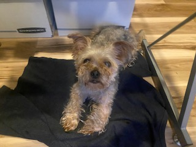
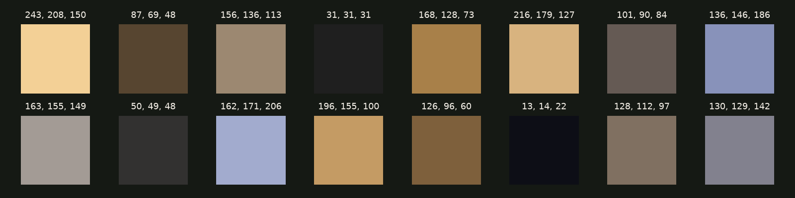
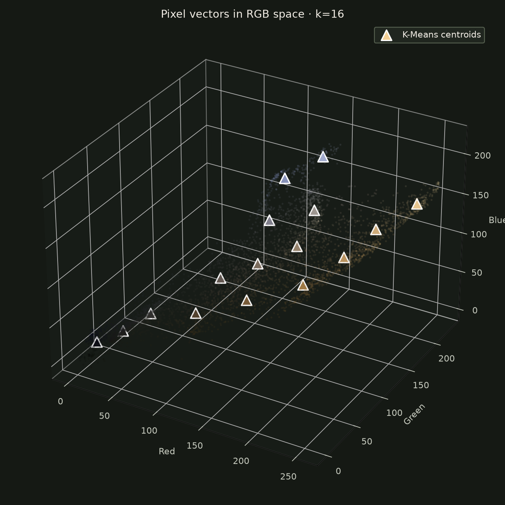

Turn pixels into vectors
Each pixel becomes a point with three coordinates: how much red, green, and blue it contains.
We taught an algorithm to see this photo as 76,800 points in color space—then summarize the whole thing with just 16 colors.
Slide between the images ↓THE RESULT
The model trades thousands of subtle color variations for 16 representative tones while preserving the shape, expression, and scruffy charm.

ORIGINAL K-MEANS · 16 COLORS← Drag to compare →
THE METHOD
Each pixel becomes a point with three coordinates: how much red, green, and blue it contains.
K-Means groups nearby colors, moving 16 centroids until they represent the image well.
Every pixel adopts its nearest centroid. The dimensions stay the same; the color vocabulary shrinks.
THE LEARNED PALETTE
These are the centroids: the representative RGB vectors chosen by the algorithm from the image itself.


INSIDE COLOR SPACE
Every dot is a sampled pixel. Its position comes from three values—red, green, and blue. The bright triangles are the 16 centroids the algorithm learned.
Nearby dots look alike. K-Means finds the center of each neighborhood, then uses those centers as the compressed palette.
THE BIG IDEA
Compression is not about keeping everything.Explore the Python project ↗
It is about finding what represents everything.